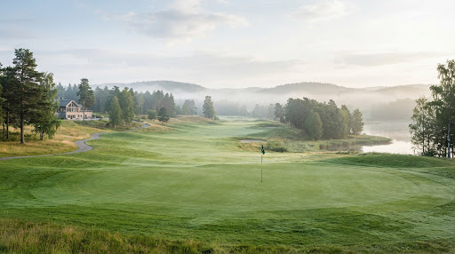
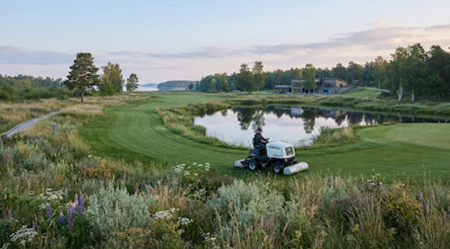

- VÅR IDENTITET & ARV
Om Golfklubb Centar
Inbäddad i det tidlösa mellansvenska kulturlandskapet förenar Golfklubb Centar Sweden orörd skandinavisk natur med kompromisslös mästerskapskvalitet. Här möts stillsam avkoppling och ren golfpassion på rättvisa villkor.

En hyllning till det skandinaviska landskapet
Vår Historia & Vision
I tre decennier har vi förvaltat marken med vördnad för det omgivande landskapet, där varje fairway skapats för att följa naturens naturliga konturer.
30 ÅR
Av kontinuerlig banskötsel, mästerskapsarrangemang och skandinavisk klubbgemenskap i harmonisk samklang.

Tidiga Rötter
Golfklubb Centar etablerades sommaren 1994 av en samling passionerade golfspelare och banariktekter med en tydlig idè: att bygga en bana som inte tvingar fram artificiella hinder, utan låter terrängen, rullande ¨sar och tallhedar diktera spelets strategi.
Framtidsvisionen
Vår vision är att erbjuda en av Nordens främsta golfmiljöer genom lågamäld elegans, hög tillgänglighet och respekt för den biologisk mångfalden. Varje spelare, oavsett handicap, ska känna sig varmt välkommen.
Banan & Faciliteter
Formgivna för såväl fokuserad träning som rofylld rekreation efter genomförd rond.
18-håls Mästerskapsbana
Par 72 designad med generösa landningsytor, strategiskt placerade bunkrar och snabba, ärliga greener som utmanar klubbval och precision.
Range & Övningsområde
Toppmodern driving range med TrackMan Range-teknologi på samtliga mattor, två stora övningsgreener för puttning samt specialdesignad närspelsgreen med bunkrar.
Klubbhus & Restaurang
Ett klassiskt skandinaviskt trähus med solterrass över 18:e green. Här serveras närproducerad svensk mat, förstklassigt kaffe och en välutrustad Pro Shop.
Banskötsel i samklang med den svenska naturen
Under ledning av vår banchef förvaltas Golfklubb Centars 120 hektar mark enligt strikta miljöriktlinjer. Vi minimerar vattenförbrukningen genom intelligent bevattningsstyrning och slutet dammsystem som samlar naturligt regnvatten.
Runt hålen bevaras ängsmarker och våtmarker, vilket ger skydd åt lokala fågelarter och pollinerare. Det är vår övertygelse att en golfbana av absolut högsta klass inte bara ska spelas i naturen, utan aktivt bidra till dess långsiktiga hälsa.
100%
Biologiskt nedbrytbar gödning
Cirkulär
Vattenåtervinning via egna dammar

Styrelse & Kontaktpersoner
Tveka inte att höra av dig till oss om du har frågor om medlemskap, banans status eller privatlektioner.
Henrik Lindqvist
Ansvarig för klubbens övergripande verksamhet, medlemsservice, tävlingsarrangemang och partnerskap.
Magnus Ekström
Leder banpersonalen i det dagliga arbetet med greenytor, ekologisk skötsel och anläggningens kondition.
Elin Wallin
Utbildare för juniorer, elit och nybörjare. Ansvarig för träningsstudion och utrustningsanpassning i shopen.